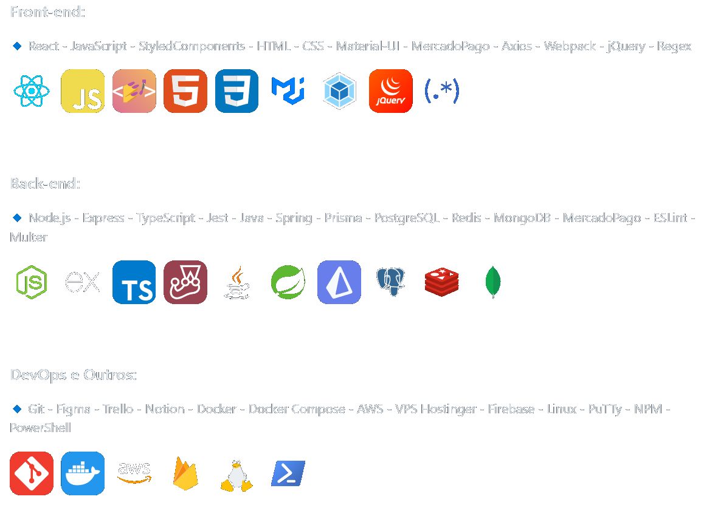
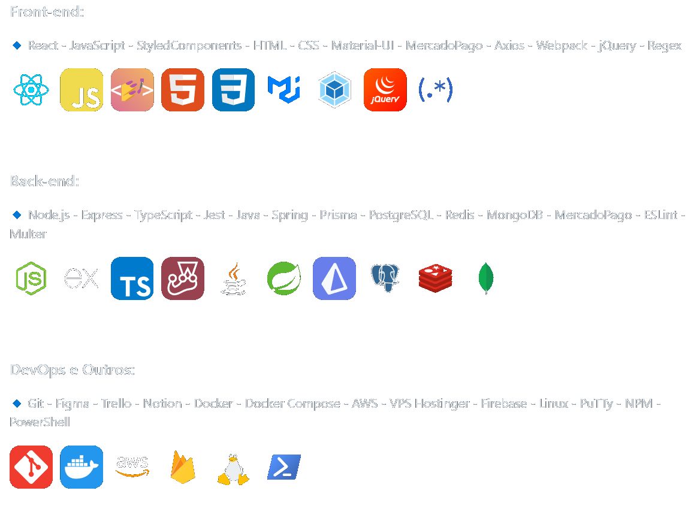

Sobre Mim
 

Me chamo Pedro e sou formado em Engenharia de Software pela Driven Education, onde obtive experiência em +25 projetos e o mais importante criei minha Paixão pela área. Junto a isso, estou sempre expandindo meus conhecimentos, e agora estou aprendendo em Java e Spring Boot, e estou totalmente aberto a colaborações e oportunidades. Fique à vontade para entrar em contato comigo!
Atualmente estou cursando Analise e Desenvolvimento de Sistemas e trabalho como Freelancer, desenvolvendo desde projetos mais complexos a projetos simples. No momento atual uso as seguintes tecnologias: React.js, Node.js, TypeScript, Docker, PostgreSQL, PrismaORM, nginx, design UX/UI e me foco na satisfação do cliente através de designs responsivos e gerenciamento eficaz de projetos.